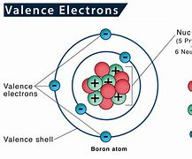

Total Marks (50)
Section A (30 Marks)
Theory Paper
Answer all the Questions within the given time
Q1. State what is mean by 'Vallence Electron' and draw a diagram to show the Vallence Electrons of Boron. [3+7]

Diagram of a Boron atam containing Vallence Electrons.
Q2.Define all three. [4+3+3]
1)Sublimation
2)Distillation
3)Condensation
Q3.Define the methods for collecting gasses (give an example of gasses that can be collected using each method). [4+3+3]
1)
2)
3)
Section B (20 Marks)
Q1.Tick the correct option. [10+10]
a). The Mass number in a Atom is the amount of?
The Number Of Protons and Electrons
The Number of Electons and Neutrons
The Number of Protons and Neutrons>
b). A seperating funnel is used to?
Seprate Solids from Liquids
Seperate Miscible Liquids
Seprate Immiscible Liquids